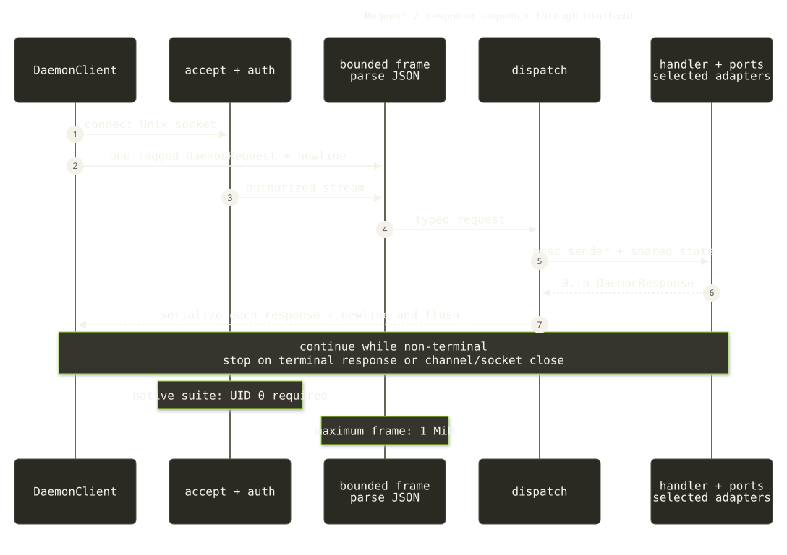

Architecture Reference
An end-to-end view of the 17-member Rust 2024 workspace (16 crates plus xtask), version 0.33.0.
1. System Boundaries and Control Surfaces
miniboxd is the control-plane boundary. On Unix it owns the daemon socket, persistent state, image cache, selected adapter suite, and lifecycle supervision. Workloads execute beyond that boundary either as native Linux processes or inside an adapter-managed VM/runtime.

| Control surface | Outer transport | Daemon path | Boundary |
|---|---|---|---|
mbx | CLI | Unix socket | Primary operator surface |
minibox-mcp | MCP over stdio | DaemonClient → Unix socket | Safe defaults; mutation and risky run options are separately gated |
minibox-crux-plugin | JSON-RPC over stdio | DaemonClient → Unix socket | Maps declared Crux handlers to daemon requests |
minibox-tui | Optional terminal UI | List polling + SubscribeEvents | Read-only by design |
2. Hexagonal Dependency Rings and Crate Ownership
The enforced direction is inward ownership and outward implementation: minibox-domain canonically owns pure values, policies, lifecycle events, and domain ports; minibox-core owns the wire protocol, Unix-socket client, OCI/image services, and shared adapters; minibox owns daemon orchestration and Linux implementations. minibox_core::domain and minibox::domain re-export the same domain identities rather than defining competing types.

Domain ring
minibox-domain: IDs, paths, state, manifests, policy, events, runtime/filesystem/network/image/metrics ports.
Application ring
minibox-core: 29-request/28-response protocol, client streams, image store and registry routing.
Infrastructure ring
minibox, platform crates, and miniboxd: handlers, persistence, adapters, socket listener, composition.
3. Request/Response Sequence Through the Daemon
DaemonClient::call opens a Unix stream, serializes one DaemonRequest, appends \n, and returns a response stream. The server authenticates the accepted peer when required, bounds each frame to 1 MiB before full buffering, parses the tagged JSON enum, and dispatches one handler task through a bounded response channel.

The canonical protocol has 29 request variants and 28 response variants. Streaming variants remain non-terminal; the terminal predicate lives on DaemonResponse and is consumed by the server and clients.
4. Handler Ports and Dependency Composition
The split handler modules receive Arc<HandlerDependencies>, not concrete platform implementations. Focused sub-structs keep image, lifecycle, exec, build, and observability dependencies explicit; optional ports turn unsupported capabilities into visible composition choices.

miniboxd is the composition root; handler modules depend on the smallest dependency slice they need.| Dependency slice | Injected ports and services | Consumers |
|---|---|---|
ImageDeps | Registry router, image loader, GC, image store | pull/load/prune/remove/list |
LifecycleDeps | Filesystem, limiter, runtime, network, data paths | run/stop/remove |
ExecDeps | Optional exec runtime, PTY session registry | exec/input/resize |
BuildDeps | Optional push, commit, and build ports | image mutation handlers |
EventDeps | Event sink/source and MetricsRecorder | lifecycle emission, subscriptions, metrics |
Container policy, optional manifest execution policy, and the checkpoint port sit beside those slices. The checkpoint port is currently wired to NoopVmCheckpoint; the snapshot protocol must not be read as implemented VM snapshot support.
5. Adapter Selection and Capability Boundaries
Selection happens at daemon startup. An explicit CLI/config/environment choice is validated and never silently replaced. With no explicit MINIBOX_ADAPTER, the registry probes for smolvm; absence falls back to native on Linux or krun on macOS. The selected suite supplies a coherent set of ports, but optional and no-op fields make capability differences real.

| Suite | Support tier | Execution boundary | Important limits |
|---|---|---|---|
| native | Production | Linux namespaces/cgroups/overlay | Linux + root; full native exec and pause/resume |
| gke | Production | proot + copy filesystem | Unprivileged; no native cgroups, exec, or pause |
| colima | Experimental | Colima/Lima VM | Exec unavailable; logs limited |
| smolvm | Experimental | Lightweight Linux VM | No exec-into-running; selected by probe when implicit |
| krun | Experimental | libkrun micro-VM | No exec-into-running; reduced image/build surface |
| VZ | Boot-blocked | Feature-gated macOS path | Linux guest boot currently fails; not a working suite |
| winbox | Stub | Planned HCS/WSL2 | Daemon start returns an error; no Windows runtime |
6. Native Linux Lifecycle and Isolation
The native path resolves and verifies image layers, prepares an overlay rootfs, creates cgroup limits and networking, then crosses the async/blocking boundary to spawn. The child enters PID, mount, network, UTS, and IPC namespaces; applies bind mounts; pivots root; installs the mount-immutability filter; creates a new session; closes extra file descriptors; and calls execve with an explicit environment.

Isolation is layered rather than singular: namespaces partition views, cgroups v2 constrain resources, overlayfs creates the writable root, and bridge/veth/netfilter or optional CNI provide native networking. Host-network mode deliberately skips network namespace isolation.
7. State Persistence and Restart Reconciliation
DaemonState keeps records behind an async RwLock and persists after mutations. The default path writes pretty JSON to state.json.tmp, applies owner-only permissions, then atomically renames it to state.json. Writes are best-effort and failures are traced rather than crashing the daemon.

- Every previously
Runningrecord becomesOrphaned, whether its PID is alive or dead. PausedremainsPausedonly when the PID is alive andcgroup.freezereads1; otherwise it becomesOrphaned.- Stale
CreatedbecomesStopped; terminal states remain unchanged. - Mounts, bridge allocations, and reaper attachment are not reconstructed from the record.
8. Security and Policy Trust Boundaries
No single check is described as the security boundary. Authentication, admission, input integrity, image integrity, filesystem containment, and child-process isolation are independent gates at different trust transitions.

Before execution
- MCP safe-default policy for agent calls
- Socket mode and native root peer credential check
- 1 MiB bounded frame and typed JSON decode
- Container policy for bind mounts/privileged mode
- Optional manifest execution admission policy
Images and child init
- Manifest/layer/aggregate pull size limits
- Layer digest verification
- Tar and overlay path validation
- Device rejection and mode stripping
- FD closure, mount ratchet, explicit-env
execve
The execution manifest is persisted before spawn and seals image identity, command, resource/network/mount inputs, and SHA-256 environment-value digests. It supports inspection and policy evaluation; it is not a claim of external attestation.
9. Events, Metrics, Tracing, and TUI Observability
Observability has separate flows. Handlers emit structured lifecycle events through EventSink; EventSource subscriptions become non-terminal Event responses. The runtime-independent MetricsRecorder can be backed by the feature-gated Prometheus recorder and HTTP /metrics endpoint. Structured tracing logs are always available, with optional OTLP span export.

Parity is intentionally not implied: native, GKE, smolvm, krun, and Colima compose event and metric ports differently, and some suites use no-op or disconnected implementations.
10. Architecture Enforcement via Tests and CI
Architecture rules are executable checks, not only diagrams. The workspace uses compiler exhaustiveness, focused unit and security regression tests, adapter conformance, protocol hashes, construction-site checks, and promotion gates.
| Gate | What it detects | Current evidence |
|---|---|---|
cargo xtask architecture | Dependency-ring and canonical domain owner violations | Explicit workspace architecture command |
| Protocol drift | Changed domain/core contract hashes and unreviewed wire evolution | Dedicated workflow plus exhaustive protocol tests |
| Protocol sites | Missed HandlerDependencies composition sites | Dedicated construction-site gate |
| Adapter coverage + conformance | Missing suite integration coverage or trait-contract behavior | Linux/macOS jobs; VZ remains separately boot-blocked |
| Handler coverage | Untested handler functions | 92.41% (207/224), measured 2026-08-10 |
| Workspace nextest | Cross-crate behavioral regressions | 2,252 tests across 118 binaries, 6 skipped in the 2026-09-06 run |
The nextest count is dated run evidence, not a timeless total. CI still has documented gaps, including Linux-root sandbox and CLI subprocess coverage; the architecture should not be read as claiming every test category runs on every change.